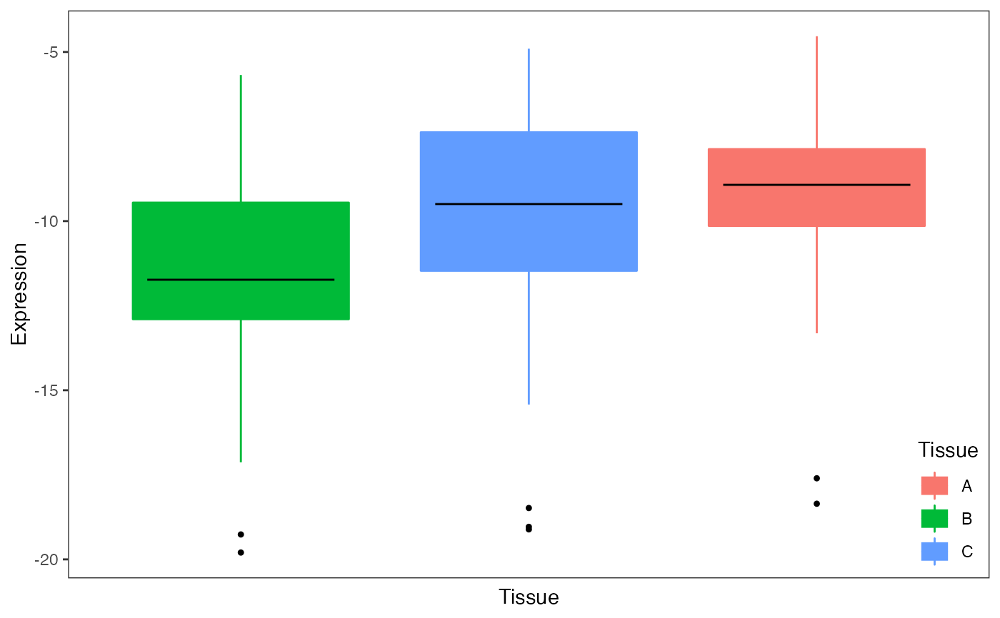
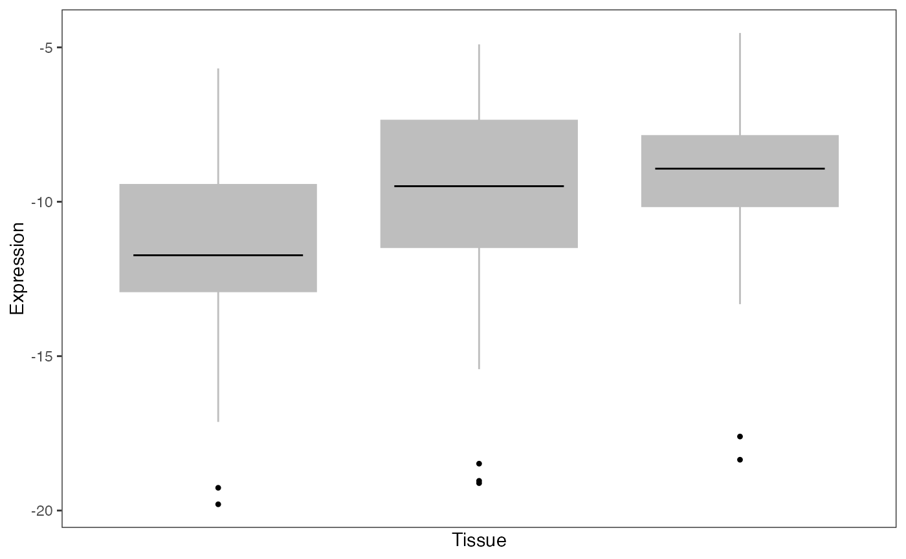
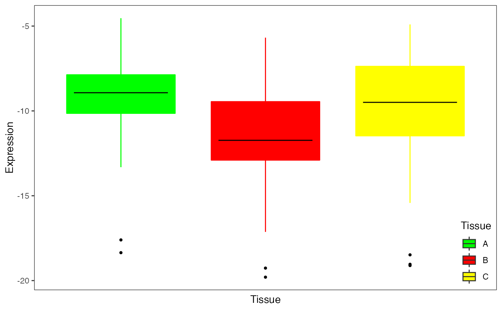

Plot gene expression stratified by another variable
plotStratify( formula, data, xlab, ylab, main, sortBy, colorBy, sort = TRUE, text = NULL, text.y = 1, text.size = 5, pts.cex = 1, ylim = NULL, legend = TRUE, x.labels = FALSE )
| formula | specify variables shown in the x- and y-axes. Y-axis should be continuous variable, x-axis should be discrete. |
|---|---|
| data | data.frame storing continuous and discrete variables specified in formula |
| xlab | label x-asis. Defaults to value of xval |
| ylab | label y-asis. Defaults to value of yval |
| main | main label |
| sortBy | name of column in geneExpr to sort samples by. Defaults to xval |
| colorBy | name of column in geneExpr to color box plots. Defaults to xval |
| sort | if TRUE, sort boxplots by median value, else use default ordering |
| text | plot text on the top left of the plot |
| text.y | indicate position of the text on the y-axis as a fraction of the y-axis range |
| text.size | size of text |
| pts.cex | size of points |
| ylim | specify range of y-axis |
| legend | show legend |
| x.labels | show x axis labels |
ggplot2 object
# Note: This is a newer, more convient interface to plotStratifyBy() # load library # library(variancePartition) # load simulated data: data(varPartData) # Create data.frame with expression and Tissue information for each sample GE = data.frame( Expression = geneExpr[1,], Tissue = info$Tissue) # Plot expression stratified by Tissue plotStratify( Expression ~ Tissue, GE )# Omit legend and color boxes grey plotStratify( Expression ~ Tissue, GE, colorBy = NULL)# Specify colors col = c( B="green", A="red", C="yellow") plotStratify( Expression ~ Tissue, GE, colorBy=col, sort=FALSE)